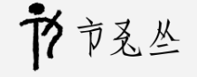
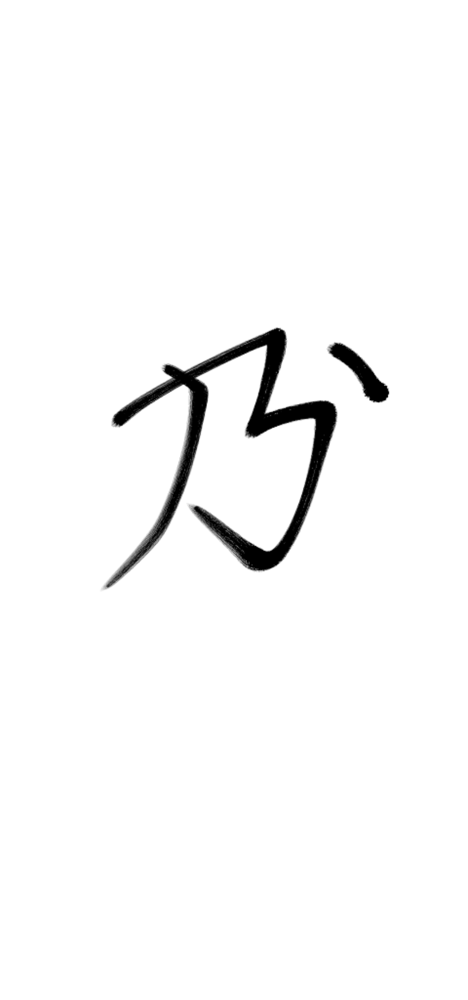

筆橋樽 — 2021/10/22 グリフ案 【涙】=【⿱目水】 【泪】=【⿱平水】 春豊席 — 2021/10/23 なるほどね
2022/09/03 jekto.vatimeliju:
2022/02/01 SY「【清】の上の点がない形の『汚れる』『汚い』要るよなぁ」
2021年の年度末に燐字タスクの洗い出しが行われていたが、それを承認するプロセスが停滞していた。2022年9月2日、「第三回初級パイグ語」の後に発生した拍手会（既存の提案について、賛意を示すかどうかを検討する会）で、以下のような議論が成された。
jekto.vatimeliju「これは正直少し疑いがある」 MIT「え、これ『良い布』じゃないのか」 SY「燐字海のロゴのが本字なので」
SY「汚れた布に【無】なんですよね」 hsjoihs「既に燐帝期には【無】なしの元の字が失われている、はアリな気がしてるんだよな」 hsjoihs・meloviliju「拍手せず」
まい/MIT — 2022/02/08 ネタグリフ: 【⿱圧種】（異体字に【⿱圧草】）油搾り機 SY — 2022/02/08 普通にあっていい気がするな まい/MIT — 2022/02/08 パイグのノリだとdet dui kirkで済ませそうだしなあ…と思った hsjoihs — 2022/02/08 燐字のノリからして義はもう少し汎用的になりそうだけど、字自体はありっぽそう
義は「搾る」ぐらいかなぁ、という主張が jekto.vatimeliju により出されていた。
2021年の年度末に燐字タスクの洗い出しが行われていたが、それを承認するプロセスが停滞していた。2022年9月2日、「第三回初級パイグ語」の後に発生した拍手会（既存の提案について、賛意を示すかどうかを検討する会）により、これらが拍手された。
meloviliju「絞る、はあっていいと思う」 hsjoihs「拍手」 SY「転写決めないと」
れもん — 2021/04/21 【砂】、【⿰地万】とかかなと思った hsjoihs — 2021/04/21 土方面を【地】で書けるかよくわからんのよね 【石】を【挽】いてもいいんですが れもん — 2021/04/21 土と石を同類とするんでしょうかね hsjoihs — 2021/04/21 土砂系の考察やらんとなぁをずっと[要検証]言っている schwert — 2020/12/10 肥料系の概念、あまり見ないね？ hsjoihs — 2020/12/10 土を考えるところから始めないといけない schwert — 2020/12/10 確かに～ れもん — 2021/04/21 埴は未造字ですか hsjoihs — 2021/04/21 ないですね れもん — 2021/04/21 (【地】ってplaceの意味範疇が大きいのか) hsjoihs — 2021/04/21 【処】は割と一貫してplaceなんですよね。土砂を表す目的で【処】はあまり見ない。んで【地】って【処】と同根語なので、同じく土砂には使いづらいんじゃないかなぁと 【地】はそもそも構成要素として未登場か meloviliju — 2021/04/21 【⿰石万】ならだいぶしっくり来る感じある れもん — 2021/04/21 ぽい meloviliju — 2021/04/21 砂岩系統で行くなら、【泥】が【⿰石膠】で造字できそうだけど【泥】という文字は立っていない hsjoihs — 2021/04/21 膠みがあるのは【埴】「粘土」の気もするのよね
meloviliju 2022/03/25: 【⿰石万】はまだ議論の余地がある気がする。【埴】=【⿰石膠】は通して良いでしょ
（転写を議論中）
meloviliju — 2021/08/21 これなんですか？ hsjoihs — 2021/08/21 > meloviliju — 2020/09/11 > 【普】⿴口在……？ meloviliju — 2021/08/21 あったなぁー lin-marnに案だけをツラツラ書いていく.txt作った方がいいかもしれないな
その後【普】は  になったので、とりあえずj.v は【遍】を仮置きしてみた。
になったので、とりあえずj.v は【遍】を仮置きしてみた。
2021年の年度末に燐字タスクの洗い出しが行われていたが、それを承認するプロセスが停滞していた。2022年9月2日、「第三回初級パイグ語」の後に発生した拍手会（既存の提案について、賛意を示すかどうかを検討する会）で、拍手が成されなかった。
hsjoihs「【遍】は拍手せず」 meloviliju・SY「拍手せず」
（字形を議論中）
meloviliju — 2022/02/19 造字案 【電】【⿻天一】稲光 hsjoihs — 2022/02/19 なるほどね meloviliju — 2022/02/19 hsjoihs — 2022/02/19 あ、天を突き刺すのか 天の中だとおもった meloviliju — 2022/02/19 突き刺しても止まっても というか【神】って稲光の象形か？ hsjoihs — 2022/02/19 そう言われてますね meloviliju — 2022/02/19 【⿵天神】のほうが直感的な気はする meloviliju — 2022/02/19 【⿵天神】、気色悪いな 簡素化されて神が一になってんのかも hsjoihs — 2022/02/19 一でよさそうよね meloviliju — 2022/02/19 さて突き抜けるか抜けないか ぶっちゃけどっちもありそう hsjoihs — 2022/02/19 @SY どう思います？ SY — 2022/02/20 どっちもよいなあ
2022/09/02 hsjoihs「【電】、変な隷変しないかな」 SY「【位】の横に点」 meloviliju「一旦保留で」 hsjoihs「保留」
（字義と転写を議論中）
筆橋樽 — 2021/11/04 グリフ提案【椀】=【⿴口米】 翰刀時 — 2021/11/04 【⿰木杯】っぽいなぁ SY「米(=穀物全般？)を入れる器だけを指せる語素があってもいいよね」 春豊席 — 2021/11/04 バートに「米とか塩とか入れる用の木箱」があったはず 翰刀時 — 2021/11/04 木箱っていうか食器だけど言語によって揺れてもいいか 【⿴口米】、【囷】なんだよな 春豊席 — 2021/11/04 nauki 塩および穀物の入る木箱 筆橋樽 — 2021/11/04 【⿴口米】、米蔵系以外にも田んぼ系がありえそう 翰刀時 — 2021/11/04 「米とか塩とか入れる用の木箱」は【櫃】:【⿷箱米】を提案 筆橋樽 — 2021/11/04 SY「【口】、【国】とか【囲】の領域の意味か口の意味」 春豊席 — 2021/11/04 たしかにね 翰刀時 — 2021/11/04 これが【⿶包米】とかになってお椀を表すのもいいよねって思った 筆橋樽 — 2021/11/04 たしかに
どっちを採用するか議論中
筆橋樽 — 2021/10/04 kop1、【⿰⿴口一為】や【⿱即為】かもしれないと思った
どれを採用するか議論中
MIT — 2021/11/03 02:23 グリフ提案【指】=【⿰手直】 hsjoihs — 2021/11/03 02:26 【⿰手三】とかどうです？
meloviliju — 2022/02/17 鎌って絶対単独で字あるよな たぶん象形かその分化で2022/03/25 meloviliju「【草】+【刀】とかもアリかもしれん」
2021年8月22日の
SY「【為】の上にいるハンマー上の道具、単立しないのかな」 meloviliju・SY「【之】とか【右】と紛らわしい。あと道具全般を表す字が欲しい」
を受けて、2022/02/01 @まい/MIT 曰く「転写【具】を『道具全般を表す字』のために予約します」
2022/02/01 SY「【蛇】って作る予定だっけ」 hsjoihs「あれ、【虫】に入らないんだっけ」 SY「非常に細長いので入らない」 hsjoihs「そうでした」
hsjoihs — 2022/02/16 そういや、転写は広報処が定めたものであるという位置づけができたので、「なぜこの転写にしたか」を公式の文書として広報処から出せるわけだ
hsjoihs — 2022/03/07 「気ままに、自由に」。SYが盤祭4thで「ご自由にお取り下さい」を【無心手入】（だったかな）と訳したのを、 それでは「手に入れようと思うな」と読めてしまうと残りの3人が応答、 【須手入此】へと書き換えられたことから提案。 SY — 2022/03/07 実は【之】で分離すると曖昧性が消える hsjoihs — 2022/03/07 たしかにね そういや轻松牌语の訳語は【軟学牌言】だったか
2021/11/03 SY「『交差する』あってよさそうだな」 2021/11/03 SY・MIT『「余る」「残る」「溢れる」』
hsjoihs — 2022/03/09 【慥】の字音が定まってなくて小冊子巻末の読み上げをいつもごまかしているので、決めたい SY — 2022/03/09 あれ、字音自体はputだけど書き分けることもあるみたいな感じじゃなかったっけ hsjoihs — 2022/03/09 あれ、そうだっけ
meloviliju — 2022/03/16 安心と確かめるがわからんかった SY — 2022/03/16 確かめるはまあ【目】とかでいいと思う 安心、【心軟】とかかなあ 【硬】との対比で格好つける meloviliju — 2022/03/16 硬軟で心の張りつめ具合表現するのはいいかも SY — 2022/03/16 難しい−硬い−しっかりした−頑固な 簡単−柔らかい−不安定な−柔軟な ぐらいの広さがありそう 心善とかと同様の構成 meloviliju — 2022/03/16 【目】、広いなぁ SY — 2022/03/16 目も広いなあ meloviliju — 2022/03/16 広く使える語があるのはいいとして、細分化した語があってもいいとは思うのよな
hsjoihs — 2022/03/21 06:00 そういや「温かい」系統に絶妙に困ってたのを思い出した meloviliju — 2022/03/21 06:02 寒い暑いに【軟】がつく可能性もあるか？みたいになってる hsjoihs — 2022/03/21 06:02 あー meloviliju — 2022/03/21 06:03 kitの対義字ってなんだろう hue1……？ 「少ない、若い」なのがな……違うかもな…… hsjoihs — 2022/03/21 06:05 なんか違いそう SY — 2022/03/21 07:25 一応迂言的に【水豊】、【水貧】は言える meloviliju — 2022/03/21 07:30 @SY kitの対義ってどうやっていうの SY — 2022/03/21 07:33 「さほど〜ない」は【無極】だと思うけど「そんなに〜でない」はなんだろな meloviliju — 2022/03/21 07:33 【僅】を立てるのもアリではないかみたいな話をしていた
meloviliju — 01/02/2022 燃料って文語でなんて言います？ 薪を想定していますけど 【葉】とか【枝】の語もわかりませんになってる SY — 01/02/2022 【木手】ってどこだっけ 薪は【火木】でいいんじゃないかという気が meloviliju — 01/02/2022 これがどっちだっけってれもん氏と二人で迷ってた 「火(も)やす木」か、たきぎ と同構成だな こういう字があるかなぁって言ってた SY — 01/02/2022 あー meloviliju — 01/02/2022 あるいは【木】の上側だけ切り出してくるとかもありそう？ 【顔】の内側みたいなことになるけど